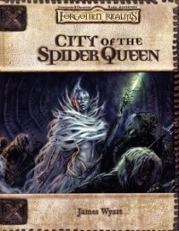

“City of the Spider Queen” on the
Shelf of Many Books

City of the Spider Queen
D&D 3.0
(3e)
Year
: 2002 (September)
City of the Spider Queen
on Amazon
Known monsters from the book:
Abyssal Ghoul
Blood Fiend
Colossal Wraith Spider
Drider Vampire
Faerunian Half-Dragon
Gargantuan Wraith Spider
Huge Wraith Spider
Jade Spider
Keening Spirit
Large Wraith Spider
Maurezhi
Medium Wraith Spider
Orb Wraith
Quth-Maren
Revenant
Silveraith
Small Wraith Spider
Spiderstone Golem